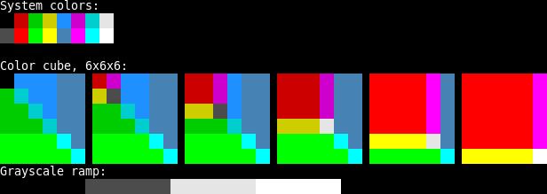

Created 星期四 30 五月 2013
这里说的终端，其实主要是指终端模拟器，也即putty/mintty, xshell, gnome-terminal, xfce4-terminal等。虽然说理论上来说，大多数内容也适用于控制台，但我并没有在上面验证过。
* 多frame
如果你像我一样用Frame Bufs这个扩展将不同“工程”的buffer组织在不同的frame上，那么肯定也想问终端下是否支持frame，答案是肯定的。仍然使用C-x 5 2来创建新的frame, 用C-x 5 o切换frame。与GUI下的差别是你不能调整frame的大小了，因为一致都是全屏——如果你想要用半个终端来跑别的东西，建议用tmux或者 Emacs里面的ansi-term-mode.
参考: Emacs Journey: CLI Emacs and multiple-frames
* 鼠标
除了终端模拟器自己的拷贝、粘贴和右键菜单，终端模拟器里面跑的应用程序其实也是可以使用鼠标的，这些终端模拟器大都支持一种叫做Xterm mouse tracking的功能: 终端模拟器收到鼠标时，先看看是不是应该用来应对自己的功能（比如文字拷贝、粘贴和右键菜单），如果不是，则将按键信息通过Xterm control sequences将按键信息发送给应用程序。
GNU Emacs可以通过M-x xterm-mouse-mode打开终端下的鼠标功能。
不过有几点值得注意:
- 所用的Emacs必须编译进了鼠标支持才能使用
xterm-mouse-mode。一般来说，如果你安装的Emacs是带X11版本的，那么就没有问题；如果你安装的是emacs-nox，那么就不支持鼠标了。 - （其实这个说法并不严谨，但根据Emacs的缺省编译设置，的确是在有window-system的时候才打开HAVE_MOUSE这个定义，configure脚本没有单独对鼠标支持提供开关。而最近的一个HAVE_MOUSE补丁则完全放开了鼠标支持，你可以在老版本Emacs代码上打上这个补丁重新编译）
- 如果你想为鼠标事件增加Ctrl,Alt和Shift修饰键(modifier)的支持，比如绑定
<S-mouse-1>或者<M-mouse-3>到某个事件，虽然理论上是支持的，但实际上都比较悲摧，自己用C-h k试试就知道了（唯一比较幸运一点的是Ctrl）
- 鼠标滚轮可以用。不过跟GUI下不同的是，几乎没有带修饰键的版本可用（也就是说不能绑定
<C-mouse-4>, <M-mouse-4>这些事件 (P.S. 在Linux系统上，鼠标滚轮事件名叫<mouse-4>和<mouse-5>，跟Windows下的<wheel-up>和<wheel-down>并不一样（不清楚Mac OS X等系统））
- 终端模拟器都有一些自己鼠标功能(比如选择文本拷贝到本地剪贴板，显示右键菜单），可能会保留Ctrl/Alt/Shift中的某一个用来做这方面的用途
- 这个设置在Putty里面是Configuration->Window->Selection->Shift overrides application's use of mouse; 在Mintty里则是 Configuration->Mouse->Modifier key for overriding default ; 而Gnome Terminal里则不提供配置，右键(<mouse-3>)始终被自己接管，按住Shift始终是本地的选择文字功能，里面跑的应用程序永远无法得到这两个事件
* 颜色
如果你用终端模拟器(gnome-terminal，guake, putty或者mintty)来运行emacs, 其实它们也是支持256色的。这样你的语法高亮配色就有了更多选择。
如果你的UNIX比较新，terminfo里面有xterm-256color 这个类型的终端描述的话，只要先执行如下语句:
export TERM=xterm-256color
然后再启动emacs，那么emacs就有了256色了, 用M-x list-colors-display看看列出了多少颜色就知道生效与否了。
** 终端模拟器支持
putty缺省是支持256色的，只要你没有在选项Window->Colours里面关闭Allow terminal to use xterm 256-color mode这一项。那么用上面的TERM环境变量就够了。
mintty 里面，你可以直接在Options->Terminal->Type里面选择xterm-256color，这样进去之后shell就会继承这个设置，不用手工设置TERM环境变量了——当然你在交互式方式或者~/.bashrc里面设置也行，不过这本来就应该是终端模拟器端的设置。
另外，如果你又在终端模拟器(gnome-terminal, putty)里面跑了screen/tmux的话，那么得启动screen/tmux之前把TERM设置成256色模式(xterm-256color或者rxvt-256color之类），然后在screen/tmux的window中把TERM设置为screen-256color，详细内容请参看ArchWiki: Tmux: Set the correct TERM
export TERM=screen-256color（或者在~/.tmux.conf里面添加set -g default-terminal "screen-256color" 来自动设置），但根据我的试验，启动tmux之前不设置TERM为支持256色的值（比如xterm-256clor，那么进入tmux是实际上得不到256种不同颜色的。** terminfo问题
如果用的Linux比较老，terminfo数据库里没有xterm-256color或者screen-256color这个类型的定义（用ls /lib/terminfo/s/可以列举所有以s开头的terminal type），那么你就没法用这个功能了（FIXME: 怎么加上这个类型定义？)
实测是否真支持256色（而不是名义上有256色却有很多重复的颜色）的一个方法是用这篇The 256 color of xterm里面提供的perl脚本256colors2.pl 这篇Colour colour everywhere! 256 colour-mode for Linux consoles 里面提供的256color2.pl 。它会显示类似如下的图:
xterm 256 color test
而只有16色时显示的图是这样:

* 待续
- 快捷键(key bindings)
- Emacs菜单问题 (lacarte)
- Emacs overlay和fringe (auto-complete, hideshow-fringe, qtmstr-outline etc)
{kind=link}
{kind=link}